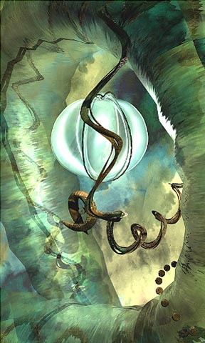

New York Digital Art Salon: selected works
from an exhibit at the Corning Gallery
970717_01, 1997, by Kenneth Huff
 |


NOTE
This image is part of Don Archer's Salon review.
Permission from the artist to use this image has neither been sought nor granted.